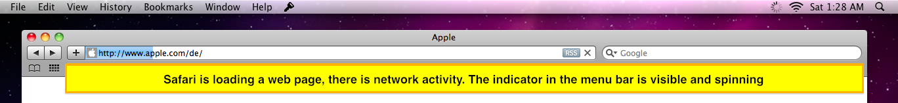
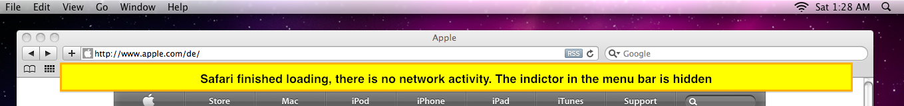
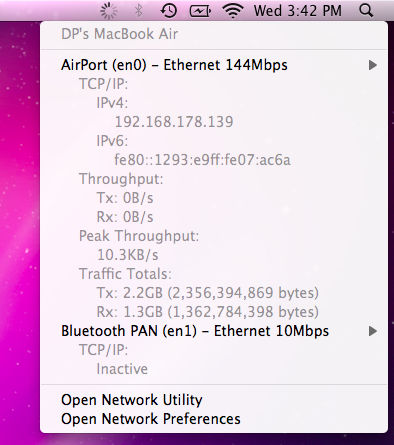

Shows a spinning wheel in the menu bar to indicate network activy. When there is no activity the indicator is stopped.
The indicator behaves like the one on iOS.
 
The spinning wheel in the menu bar only reports network activy, when traffic crosses a certain threshold - by default more than 1000 bytes/second (configurable).
iTrafficIndicator uses oportions of the open source application 'MenuMeters' to gather detailed network information. This App is released with the permission of the original author Alex Harper. Source code is available at www.pich.info/ipli.zip? :)